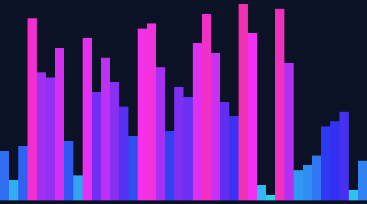

1. Timsort（ティムソート）

ハイブリッド（実用標準）
挿入ソートとマージソートを組み合わせた実用ソートの決定版。データ中の既に整列した並び（run）を活かし、短い区間は挿入ソートで整え、最後にマージで統合する。Python の `sorted()` / `list.sort()`、Java のオブジェクト配列の標準ソートがこれ。
※このリポの実装は骨子（挿入＋マージ）を可視化する簡略版。本物はさらに高度。
最良 O(n) / 平均 O(n log n)
/ 最悪 O(n log n) / メモリ O(n)
/ 安定 ✅ / in-place ❌
使いどころ: 実務で何も考えず使うならこれ。現実のデータは部分的に整列していることが多く、その性質を最大限に活かして速くなる。
- 現実データに非常に速い（部分整列で O(n) に近づく）
- 安定ソート
- 最悪でも O(n log n) を保証
- 実装が複雑
- 追加メモリ O(n) が必要
2. クイックソート
比較・分割統治
ピボットを1つ選び、それより小さい群・大きい群に分割して再帰的に並べる分割統治法。定数倍が小さく実測が速いため、多くの言語の標準ソートの中核（C の qsort、C++ の introsort など）。
最良 O(n log n) / 平均 O(n log n)
/ 最悪 O(n²) / メモリ O(log n)
/ 安定 ❌ / in-place ✅
使いどころ: 汎用の高速ソートが欲しく、安定性が不要でメモリを節約したいとき。
- 平均 O(n log n) で定数倍が小さく実測が速い
- 追加メモリがほぼ不要（in-place）
- 最悪 O(n²)（ピボット選択が悪いと劣化）
- 安定でない
- 再帰でスタックを使う
3. マージソート
比較・分割統治
配列を半分に分割し、それぞれを整列してから2つの整列済み列をマージする分割統治法。計算量が入力によらず安定して O(n log n)。
最良 O(n log n) / 平均 O(n log n)
/ 最悪 O(n log n) / メモリ O(n)
/ 安定 ✅ / in-place ❌
使いどころ: 安定性が必要なとき、連結リスト、外部ソート（メモリに乗らない巨大データ）。
- 最悪でも O(n log n) を保証
- 安定ソート
- 連結リストや外部ソートに向く
- 追加メモリ O(n) が必要
- 配列の in-place 版は複雑
4. ヒープソート
比較・選択（ヒープ）
配列をヒープ（半順序の二分木）に組み、最大値を末尾へ取り出すことを繰り返す。優先度付きキューと同じ仕組み。
最良 O(n log n) / 平均 O(n log n)
/ 最悪 O(n log n) / メモリ O(1)
/ 安定 ❌ / in-place ✅
使いどころ: 追加メモリを使わず最悪 O(n log n) を保証したいとき。
- 最悪 O(n log n) を保証
- in-place（追加メモリ O(1)）
- 安定でない
- キャッシュ効率が悪く実測はクイックに劣りがち
5. 挿入ソート
比較・素朴
各要素を、手前の整列済み部分の正しい位置に挿入していく。トランプを手札に並べるときの動き。
最良 O(n) / 平均 O(n²)
/ 最悪 O(n²) / メモリ O(1)
/ 安定 ✅ / in-place ✅
使いどころ: 要素数が小さいとき、ほぼ整列済みのとき、高速ソートの小区間の土台として。
- 小さい/ほぼ整列済みデータに非常に速い（最良 O(n)）
- 安定
- in-place・実装が単純
- オンライン（逐次到着するデータを処理できる）
- 大きいランダムデータでは O(n²) で遅い
6. 計数ソート（counting sort）

非比較
各値の出現回数を数え、その累積から各要素の最終位置を決める非比較ソート。比較を一切しないので O(n log n) の壁を超えられる。
最良 O(n+k) / 平均 O(n+k)
/ 最悪 O(n+k) / メモリ O(n+k)
/ 安定 ✅ / in-place ❌
使いどころ: キーが狭い範囲の整数（年齢・点数・バイト値など）。
- O(n+k) で比較ソートの限界より速い
- 安定
- 値の範囲 k が大きいとメモリ・時間が破綻
- 整数など離散キー専用
7. 基数ソート（radix sort, LSD）
非比較
下位の桁から順に、桁ごとに安定ソート（計数ソート等）を繰り返す非比較ソート。d=桁数、b=基数。
最良 O(d·(n+b)) / 平均 O(d·(n+b))
/ 最悪 O(d·(n+b)) / メモリ O(n+b)
/ 安定 ✅ / in-place ❌
使いどころ: 固定長の整数・文字列キー（ID、郵便番号、固定長文字列）。
- 大量の整数キーに強い
- 安定
- 桁数・基数に依存し汎用比較には使えない
- 追加メモリが必要
8. バケットソート
非比較
値の範囲をいくつかのバケツに分け、各バケツ内を別ソートで整列してから連結する。分布が一様なら各バケツが小さく済む。
最良 O(n+k) / 平均 O(n+k)
/ 最悪 O(n²) / メモリ O(n+k)
/ 安定 ✅ / in-place ❌
使いどころ: データが範囲内に一様分布しているとき（乱数など）。
- 一様分布なら平均 O(n+k)
- 分布が偏ると最悪 O(n²)
- 追加メモリが必要
9. シェルソート
比較・挿入の強化
離れた間隔（gap）の要素同士で挿入ソートを行い、gap を縮めながら繰り返す挿入ソートの強化版。遠くの逆順を早く解消する。
最良 O(n log n) / 平均 O(n^1.25) 前後
/ 最悪 O(n²) / メモリ O(1)
/ 安定 ❌ / in-place ✅
使いどころ: 実装が単純で追加メモリ無しでそこそこ速いものが欲しいとき（組み込みなど）。
- in-place
- 挿入ソートより大幅に速い
- 実装が比較的単純
- 計算量が gap 列に依存し解析が難しい
- 安定でない
10. 選択ソート
比較・素朴
未整列部分から最小値を選んで先頭へ置くことを繰り返す。
最良 O(n²) / 平均 O(n²)
/ 最悪 O(n²) / メモリ O(1)
/ 安定 ❌ / in-place ✅
使いどころ: 交換回数を最小にしたいとき（書き込みコストが高い媒体）。主に教育用。
- 交換回数が O(n) と最小
- in-place・実装が単純
- 比較回数は常に O(n²)（データによらず遅い）
- 安定でない
11. バブルソート
比較・素朴
隣り合う要素を比較して逆順なら交換、を端から繰り返す。大きい値が泡のように浮かんでいく。
最良 O(n) / 平均 O(n²)
/ 最悪 O(n²) / メモリ O(1)
/ 安定 ✅ / in-place ✅
使いどころ: ほぼ教育専用。早期終了を入れればほぼ整列済みの検出に使える程度。
- 実装が最も単純
- 安定
- ほぼ整列済みなら早期終了で O(n)
- 一般に O(n²) で実用では最も遅い部類
12. カクテルシェーカーソート
比較・バブル亜種
バブルソートを左右両方向に往復させる版。両端から整っていく。
最良 O(n) / 平均 O(n²)
/ 最悪 O(n²) / メモリ O(1)
/ 安定 ✅ / in-place ✅
使いどころ: 教育用。バブルの小改良。
- バブルより速い場合がある
- 安定
- 依然 O(n²)
13. コムソート
比較・バブル亜種
バブルソートの gap を大きく取り、徐々に縮める改良版。離れた逆順（turtle）を早く解消する。
最良 O(n log n) / 平均 O(n² / 2^p)
/ 最悪 O(n²) / メモリ O(1)
/ 安定 ❌ / in-place ✅
使いどころ: 教育用。バブルの実用的な改良例。
- バブルより大幅に速い
- in-place
- 安定でない
- クイック等には及ばない
14. ノームソート
比較・素朴
逆順を見つけたら1つ戻して入れ替える、挿入ソートに似た極めて単純なソート。
最良 O(n) / 平均 O(n²)
/ 最悪 O(n²) / メモリ O(1)
/ 安定 ✅ / in-place ✅
使いどころ: 教育・ネタ寄り。実装の単純さの例。
- 実装が極めて単純
- in-place・安定
- O(n²) で遅い
15. ボゴソート（bogosort）
ネタ
配列をランダムにシャッフルし、偶然整列するまで繰り返すジョークソート。
最良 O(n) / 平均 O(n·n!)
/ 最悪 ∞（終わらない可能性） / メモリ O(1)
/ 安定 ❌ / in-place ✅
使いどころ: 使わない（ネタ）。乱数と計算量の極端さを体感する教材。
- 実装は一応単純
- 平均 O(n·n!) と実用上ありえない遅さ
- 終わる保証がない